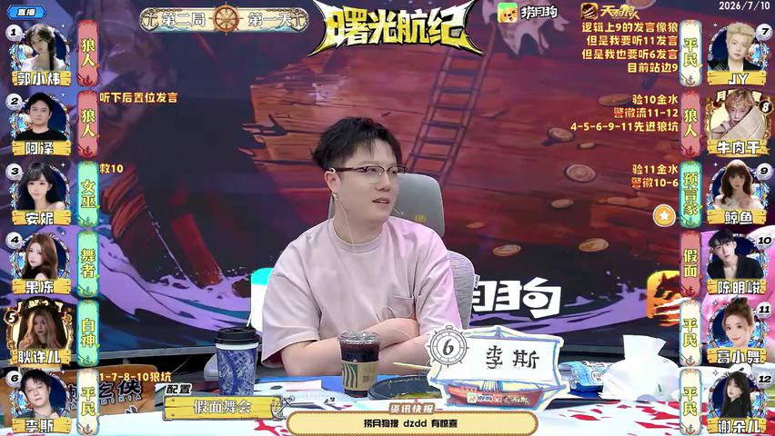

20260710 正赛 第六期 Day-4 第二局-假面舞会
机器整理或已入库均不代表人工核实；请依据原文和来源逐项复核。
文字补充与具体疑点
名单配对为预言家9、女巫3、舞者4、白痴5、狼1/2/8、假面10、平民6/7/11/12。首夜狼刀10假面被救，9验11好人，9当警长后8狼自爆。次夜舞池/假面验证过程含混，狼队目标未报，女巫毒1，转写记1、5出局，9验10狼并交徽11。末夜舞者4入池，假面10验7并给面具，狼杀4，结算4/11双死；10号最后狼假面交牌，好人获胜。
AI已核实 · round2.wolf_attack.targets; round2.night_deaths：狼刀目标未报；虽然毒杀1明确，另称1、5号出局但死亡机制未能分开。
狼队击杀 / 女巫毒杀一号狼人 / 一号5号
转写时间：00:44:36.610
核查结论与依据
R2狼队狼刀目标9号预言家；本夜夜死为1、5、9号。1号为女巫毒杀，5号此前已被舞池淘汰后计入当夜结果。 依据与推断：“狼队击杀”与下一字幕行“9号预言家”连读为狼刀目标9；后续说女巫毒杀1号并以1、5、9总结本夜出局。9号出局后移交警徽11号进一步印证9号确实离场。 来源 data/seasons/S22/第07周_正赛第06期/2026-07-10/2026-07-10_S22_第07周_正赛第06期_第02局_假面舞会__BV1GxNH6YEht_P01_CID39830751496.平台AI字幕_ai-zh_01_feeed585eb.原始.json · 0:44:00–0:45:21 原句：你两个能走对 来给各位大老师们做本局游戏的副版 本届版新假面舞会深圳正义原家9号女巫 3号舞者 4号白神 5号狼人阵营 一号2号八号假面 10号平民阵营 6号七号 11号 12号首夜狼队击杀10号假面女 要救济 形成平安夜 预言家验证11号玩家平民为好人身份 警车敬酒环节 9号预言家获得警徽 第一天白天 8号狼人选择自爆入夜舞者的舞池 一号狼人 2号狼人 5号白神假面验证了4号玩家 五者不在舞池内 给予了12号平民一张面具 此时五池内5号白神被五出局 当夜狼队击杀 9号预言家牛毒杀一号狼人 一号5号 9号多岛预言家夜间验证了10号玩家 假面为狼人身份 并在出局后将警徽移交至11号平民 在第二天的白天 2号狼人选择自爆入夜舞者的舞池 7号平民 10号假面 11号平民当夜假面验证了7号玩家 平民在五室内给予7号玩家一张面具 击杀4号舞者 当夜为4号 11号双子 在第三天白天场上最后一狼假面选择交牌 游戏结束 好人阵营获胜 以上是我们今天第二局假面舞会的全部内容 感谢下午的投食 感谢
AI已核实 · round3.night_deaths：11号死亡原因未在文本中说明。
击杀4号舞者 / 当夜为4号11号双子
转写时间：00:45:06.460
核查结论与依据
R3夜出局名单为4号、11号；原文明确狼队击杀4号，未说明11号为何出局。 依据与推断：疑点问的是夜间出局名单，4和11的姓名都清楚；不把11号机制补成狼刀。 来源 data/seasons/S22/第07周_正赛第06期/2026-07-10/2026-07-10_S22_第07周_正赛第06期_第02局_假面舞会__BV1GxNH6YEht_P01_CID39830751496.平台AI字幕_ai-zh_01_feeed585eb.原始.json · 0:44:00–0:45:21 原句：你两个能走对 来给各位大老师们做本局游戏的副版 本届版新假面舞会深圳正义原家9号女巫 3号舞者 4号白神 5号狼人阵营 一号2号八号假面 10号平民阵营 6号七号 11号 12号首夜狼队击杀10号假面女 要救济 形成平安夜 预言家验证11号玩家平民为好人身份 警车敬酒环节 9号预言家获得警徽 第一天白天 8号狼人选择自爆入夜舞者的舞池 一号狼人 2号狼人 5号白神假面验证了4号玩家 五者不在舞池内 给予了12号平民一张面具 此时五池内5号白神被五出局 当夜狼队击杀 9号预言家牛毒杀一号狼人 一号5号 9号多岛预言家夜间验证了10号玩家 假面为狼人身份 并在出局后将警徽移交至11号平民 在第二天的白天 2号狼人选择自爆入夜舞者的舞池 7号平民 10号假面 11号平民当夜假面验证了7号玩家 平民在五室内给予7号玩家一张面具 击杀4号舞者 当夜为4号 11号双子 在第三天白天场上最后一狼假面选择交牌 游戏结束 好人阵营获胜 以上是我们今天第二局假面舞会的全部内容 感谢下午的投食 感谢
AI已核实 · 第2夜 · 狼队击杀：动作或目标与已有记录不同，保留双方候选供你确认
同轮转写上下文
8号狼人选择自爆入夜舞者的舞池 一号狼人 2号狼人 5号白神假面验证了4号玩家 五者不在舞池内 给予了12号平民一张面具 此时五池内5号白神被五出局 当夜狼队击杀 9号预言家牛毒杀一号狼人 一号5号 9号多岛预言家夜间验证了10号玩家 假面为狼人身份 并在出局后将警徽移交至11号平民 在第二天的白天
待核候选：{"number": 2, "phase": "night", "slot": "wolf_attack", "action": "unknown", "actor": null, "targets": [], "result": "狼队击杀目标未报"}
转写时间：00:44:22.680
核查结论与依据
R2狼队狼刀目标9号预言家；本夜夜死为1、5、9号。1号为女巫毒杀，5号此前已被舞池淘汰后计入当夜结果。 依据与推断：“狼队击杀”与下一字幕行“9号预言家”连读为狼刀目标9；后续说女巫毒杀1号并以1、5、9总结本夜出局。9号出局后移交警徽11号进一步印证9号确实离场。 来源 data/seasons/S22/第07周_正赛第06期/2026-07-10/2026-07-10_S22_第07周_正赛第06期_第02局_假面舞会__BV1GxNH6YEht_P01_CID39830751496.平台AI字幕_ai-zh_01_feeed585eb.原始.json · 0:44:00–0:45:21 原句：你两个能走对 来给各位大老师们做本局游戏的副版 本届版新假面舞会深圳正义原家9号女巫 3号舞者 4号白神 5号狼人阵营 一号2号八号假面 10号平民阵营 6号七号 11号 12号首夜狼队击杀10号假面女 要救济 形成平安夜 预言家验证11号玩家平民为好人身份 警车敬酒环节 9号预言家获得警徽 第一天白天 8号狼人选择自爆入夜舞者的舞池 一号狼人 2号狼人 5号白神假面验证了4号玩家 五者不在舞池内 给予了12号平民一张面具 此时五池内5号白神被五出局 当夜狼队击杀 9号预言家牛毒杀一号狼人 一号5号 9号多岛预言家夜间验证了10号玩家 假面为狼人身份 并在出局后将警徽移交至11号平民 在第二天的白天 2号狼人选择自爆入夜舞者的舞池 7号平民 10号假面 11号平民当夜假面验证了7号玩家 平民在五室内给予7号玩家一张面具 击杀4号舞者 当夜为4号 11号双子 在第三天白天场上最后一狼假面选择交牌 游戏结束 好人阵营获胜 以上是我们今天第二局假面舞会的全部内容 感谢下午的投食 感谢
画面座位姓名核对
按同日固定座位复用：2026-07-10。每座保留实际来源截图，未跨比赛日推定。
截图来源：BV1GxNH6YEht · 00:22:30.450

| 座位 | 画面ID | 统一人名 | 来源 |
|---|---|---|---|
| 1号 | 郭小炜 | 郭小炜 | BV1GxNH6YEht · 00:22:30.450 |
| 2号 | 阿泽 | 阿泽 | BV1GxNH6YESw · 00:50:42.000 |
| 3号 | 安妮 | 安妮 | BV1GxNH6YESw · 00:50:42.000 |
| 4号 | 果冻 | 果冻 | BV1GxNH6YESw · 00:50:42.000 |
| 5号 | 耿许儿 | 耿许儿 | BV1GxNH6YESw · 00:50:42.000 |
| 6号 | 李斯 | 李斯 | BV1GxNH6YESw · 00:50:42.000 |
| 7号 | JY | JY | BV1GxNH6YESw · 00:50:42.000 |
| 8号 | 牛肉干 | 牛肉干 | BV1GxNH6YESw · 00:50:42.000 |
| 9号 | 鲸鱼 | 董鲸鱼 | BV1GxNH6YESw · 00:50:42.000 |
| 10号 | 陈明峻 | 陈明峻 | BV1GxNH6YESw · 00:50:42.000 |
| 11号 | 葛小舞 | 葛小舞 | BV1GxNH6YESw · 00:50:42.000 |
| 12号 | 谢朵儿 | 谢朵儿 | BV1GxNH6YESw · 00:50:42.000 |


座位身份
| 座位 | 姓名 | 身份 | 阵营 | 学习目标 | 学习形态 |
|---|---|---|---|---|---|
| 1 | 郭小炜 | 狼人 | 狼人 | 未知 | 未知 |
| 2 | 阿泽 | 狼人 | 狼人 | 未知 | 未知 |
| 3 | 安妮 | 女巫 | 好人 | 未知 | 未知 |
| 4 | 果冻 | 舞者 | 好人 | 未知 | 未知 |
| 5 | 耿许儿 | 白痴 | 好人 | 未知 | 未知 |
| 6 | 李斯 | 平民 | 好人 | 未知 | 未知 |
| 7 | JY | 平民 | 好人 | 未知 | 未知 |
| 8 | 牛肉干 | 狼人 | 狼人 | 未知 | 未知 |
| 9 | 董鲸鱼 | 预言家 | 好人 | 未知 | 未知 |
| 10 | 陈明峻 | 假面 | 狼人 | 未知 | 未知 |
| 11 | 葛小舞 | 平民 | 好人 | 未知 | 未知 |
| 12 | 谢朵儿 | 平民 | 好人 | 未知 | 未知 |
第1轮
夜间
| 事项 | 已知事实 |
|---|---|
| 狼队击杀 | 狼队击杀：狼队击杀10号（假面，陈明峻） |
| 女巫解药 | 女巫解药：3号（女巫，安妮）使用解药10号（假面，陈明峻） |
| 预言家查验 | 预言家查验：9号（预言家，董鲸鱼）查验11号（平民，葛小舞）；结果：好人 |
展开转写未提供的5个槽位
| 事项 | 缺口 |
|---|---|
| 女巫毒药 | 女巫毒药：转写没有说明，留待补充 |
| 假面验证舞池成员 | 假面验证舞池成员：转写没有说明，留待补充 |
| 假面赐予面具 | 假面赐予面具：转写没有说明，留待补充 |
| 舞者选择共舞（第二夜起） | 舞者选择共舞（第二夜起）：转写没有说明，留待补充 |
| 共舞结算 | 共舞结算：转写没有说明，留待补充 |
白天
| 事项 | 已知事实 |
|---|---|
| 警长结果 | 9号（预言家，董鲸鱼）当选警长 |
| 夜间出局 | 夜间出局：平安夜 |
| 狼人自爆 | 狼人自爆：8号（狼人，牛肉干）自爆 |
展开转写未提供的7个槽位
| 事项 | 缺口 |
|---|---|
| 上警名单 | 上警名单：转写没有说明，留待补充 |
| 警长投票 | 警长投票：转写没有说明，留待补充 |
| 警徽 | 警徽：转写没有说明，留待补充 |
| 白天发言顺序 | 白天发言顺序：转写没有说明，留待补充 |
| 放逐投票 | 放逐投票：转写没有说明，留待补充 |
| 放逐结果 | 放逐结果：转写没有说明，留待补充 |
| 白痴公开身份 | 白痴公开身份：转写没有说明，留待补充 |
第2轮
夜间
| 事项 | 已知事实 |
|---|---|
| 狼队击杀 | 狼队击杀：狼队击杀9号（预言家，董鲸鱼）；结果：狼队击杀9号预言家 |
| 女巫毒药 | 女巫毒药：3号（女巫，安妮）使用毒药1号（狼人，郭小炜） |
| 预言家查验 | 预言家查验：9号（预言家，董鲸鱼）查验10号（假面，陈明峻）；结果：狼人 |
| 假面验证舞池成员 | 假面验证舞池成员：10号（假面，陈明峻）验证4号（舞者，果冻）；结果：假面 |
| 假面赐予面具 | 假面赐予面具：10号（假面，陈明峻）给予面具12号（平民，谢朵儿）；结果：给12号平民面具 |
| 舞者选择共舞（第二夜起） | 舞者选择共舞（第二夜起）：4号（舞者，果冻）共舞1号（狼人，郭小炜）、2号（狼人，阿泽）、5号（白痴，耿许儿）；结果：舞池段提到1、2、5号入池，具体发起行为听写不完整 |
展开转写未提供的2个槽位
| 事项 | 缺口 |
|---|---|
| 女巫解药 | 女巫解药：转写没有说明，留待补充 |
| 共舞结算 | 共舞结算：转写没有说明，留待补充 |
白天
| 事项 | 已知事实 |
|---|---|
| 夜间出局 | 夜间出局：1号（狼人，郭小炜）、5号（白痴，耿许儿）、9号（预言家，董鲸鱼） |
| 警徽 | 警徽：9号（预言家，董鲸鱼）移交警徽11号（平民，葛小舞） |
| 狼人自爆 | 狼人自爆：2号（狼人，阿泽）自爆 |
展开转写未提供的7个槽位
| 事项 | 缺口 |
|---|---|
| 上警名单 | 上警名单：转写没有说明，留待补充 |
| 警长投票 | 警长投票：转写没有说明，留待补充 |
| 警长结果 | 警长结果：转写没有说明，留待补充 |
| 白天发言顺序 | 白天发言顺序：转写没有说明，留待补充 |
| 放逐投票 | 放逐投票：转写没有说明，留待补充 |
| 放逐结果 | 放逐结果：转写没有说明，留待补充 |
| 白痴公开身份 | 白痴公开身份：转写没有说明，留待补充 |
第3轮
夜间
| 事项 | 已知事实 |
|---|---|
| 狼队击杀 | 狼队击杀：狼队击杀4号（舞者，果冻） |
| 假面验证舞池成员 | 假面验证舞池成员：10号（假面，陈明峻）验证7号（平民，JY）；结果：假面 |
| 假面赐予面具 | 假面赐予面具：10号（假面，陈明峻）给予面具7号（平民，JY）；结果：给7号平民面具 |
| 舞者选择共舞（第二夜起） | 舞者选择共舞（第二夜起）：4号（舞者，果冻）共舞7号（平民，JY）、10号（假面，陈明峻）、11号（平民，葛小舞）；结果：舞池段点到7、10、11号 |
展开转写未提供的4个槽位
| 事项 | 缺口 |
|---|---|
| 女巫解药 | 女巫解药：转写没有说明，留待补充 |
| 女巫毒药 | 女巫毒药：转写没有说明，留待补充 |
| 预言家查验 | 预言家查验：转写没有说明，留待补充 |
| 共舞结算 | 共舞结算：转写没有说明，留待补充 |
白天
| 事项 | 已知事实 |
|---|---|
| 夜间出局 | 夜间出局：4号（舞者，果冻）、11号（平民，葛小舞） |
| 狼人自爆 | 狼人自爆：10号（假面，陈明峻）自爆 |
展开转写未提供的8个槽位
| 事项 | 缺口 |
|---|---|
| 上警名单 | 上警名单：转写没有说明，留待补充 |
| 警长投票 | 警长投票：转写没有说明，留待补充 |
| 警长结果 | 警长结果：转写没有说明，留待补充 |
| 警徽 | 警徽：转写没有说明，留待补充 |
| 白天发言顺序 | 白天发言顺序：转写没有说明，留待补充 |
| 放逐投票 | 放逐投票：转写没有说明，留待补充 |
| 放逐结果 | 放逐结果：转写没有说明，留待补充 |
| 白痴公开身份 | 白痴公开身份：转写没有说明，留待补充 |
复盘原文对照
复盘状态：已定位候选复盘，待回听
复盘区间：00:44:00.400 – 00:45:21.330。播放到复盘末尾会自动暂停。
选择一段原文可跳转到音频时间点。
| # | 时间 | 复盘原文 | 音频 |
|---|---|---|---|
| 1 | 00:44:00.400 – 00:44:01.880 | 你两个能走对 | |
| 2 | 00:44:01.880 – 00:44:03.840 | 来给各位大老师们做本局游戏的副版 | |
| 3 | 00:44:03.840 – 00:44:06.160 | 本届版新假面舞会深圳正义原家9号女巫 | |
| 4 | 00:44:06.160 – 00:44:07.330 | 3号舞者 | |
| 5 | 00:44:07.330 – 00:44:08.370 | 4号白神 | |
| 6 | 00:44:08.370 – 00:44:09.330 | 5号狼人阵营 | |
| 7 | 00:44:09.330 – 00:44:10.570 | 一号2号八号假面 | |
| 8 | 00:44:10.570 – 00:44:11.650 | 10号平民阵营 | |
| 9 | 00:44:11.650 – 00:44:12.330 | 6号七号 | |
| 10 | 00:44:12.330 – 00:44:12.730 | 11号 | |
| 11 | 00:44:12.730 – 00:44:15.430 | 12号首夜狼队击杀10号假面女 | |
| 12 | 00:44:15.430 – 00:44:15.910 | 要救济 | |
| 13 | 00:44:15.910 – 00:44:16.550 | 形成平安夜 | |
| 14 | 00:44:16.550 – 00:44:19.360 | 预言家验证11号玩家平民为好人身份 | |
| 15 | 00:44:19.360 – 00:44:20.480 | 警车敬酒环节 | |
| 16 | 00:44:20.480 – 00:44:21.960 | 9号预言家获得警徽 | |
| 17 | 00:44:21.960 – 00:44:22.680 | 第一天白天 | |
| 18 | 00:44:22.680 – 00:44:25.910 | 8号狼人选择自爆入夜舞者的舞池 | |
| 19 | 00:44:25.910 – 00:44:27.370 | 一号狼人 | |
| 20 | 00:44:27.370 – 00:44:28.710 | 2号狼人 | |
| 21 | 00:44:28.710 – 00:44:32.690 | 5号白神假面验证了4号玩家 | |
| 22 | 00:44:32.690 – 00:44:34.550 | 五者不在舞池内 | |
| 23 | 00:44:34.550 – 00:44:36.610 | 给予了12号平民一张面具 | |
| 24 | 00:44:36.610 – 00:44:39.865 | 此时五池内5号白神被五出局 | |
| 25 | 00:44:40.310 – 00:44:41.410 | 当夜狼队击杀 | |
| 26 | 00:44:41.410 – 00:44:43.810 | 9号预言家牛毒杀一号狼人 | |
| 27 | 00:44:43.810 – 00:44:45.130 | 一号5号 | |
| 28 | 00:44:45.130 – 00:44:48.250 | 9号多岛预言家夜间验证了10号玩家 | |
| 29 | 00:44:48.250 – 00:44:49.330 | 假面为狼人身份 | |
| 30 | 00:44:49.330 – 00:44:52.880 | 并在出局后将警徽移交至11号平民 | |
| 31 | 00:44:52.880 – 00:44:54.240 | 在第二天的白天 | |
| 32 | 00:44:54.240 – 00:44:57.480 | 2号狼人选择自爆入夜舞者的舞池 | |
| 33 | 00:44:57.480 – 00:44:59.020 | 7号平民 | |
| 34 | 00:44:59.020 – 00:45:00.360 | 10号假面 | |
| 35 | 00:45:00.360 – 00:45:04.160 | 11号平民当夜假面验证了7号玩家 | |
| 36 | 00:45:04.160 – 00:45:06.460 | 平民在五室内给予7号玩家一张面具 | |
| 37 | 00:45:06.460 – 00:45:08.880 | 击杀4号舞者 | |
| 38 | 00:45:08.880 – 00:45:10.580 | 当夜为4号 | |
| 39 | 00:45:10.580 – 00:45:11.960 | 11号双子 | |
| 40 | 00:45:11.960 – 00:45:15.440 | 在第三天白天场上最后一狼假面选择交牌 | |
| 41 | 00:45:15.440 – 00:45:16.100 | 游戏结束 | |
| 42 | 00:45:16.100 – 00:45:17.140 | 好人阵营获胜 | |
| 43 | 00:45:17.140 – 00:45:19.680 | 以上是我们今天第二局假面舞会的全部内容 | |
| 44 | 00:45:19.680 – 00:45:20.890 | 感谢下午的投食 | |
| 45 | 00:45:20.890 – 00:45:21.330 | 感谢 |
问题与未映射事件
问题清单
- round2.wolf_attack.targets; round2.night_deaths：狼刀目标未报；虽然毒杀1明确，另称1、5号出局但死亡机制未能分开。
- round3.night_deaths：11号死亡原因未在文本中说明。
- round2.night.wolf_attack：动作或目标与已有记录不同，保留双方候选供你确认
未映射事件
- 暂无未映射事件。
本局文件与状态
状态：已入库待复核
复核备注：AI疑点推理核查：3项已核实，0项仍待review。 本局判断：R2狼队狼刀目标9号预言家；本夜夜死为1、5、9号。1号为女巫毒杀，5号此前已被舞池淘汰后计入当夜结果。；R3夜出局名单为4号、11号；原文明确狼队击杀4号，未说明11号为何出局。
入库状态只表示数据已写入数据库，不代表人工核实。
数据库收据
{
"game_id": "11c8edcc-c76b-4789-82c1-c03e182f730f",
"slug": "bili-BV1GxNH6YEht-p01-g02",
"people": 16,
"seats": 12,
"rounds": 3,
"night_slots": 8,
"day_slots": 10,
"event_records": 54,
"source_files": 4
}